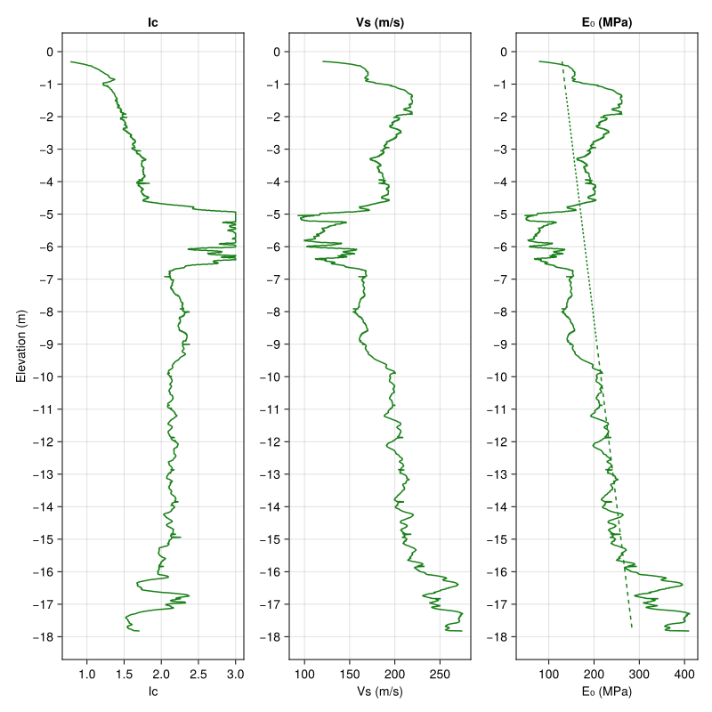
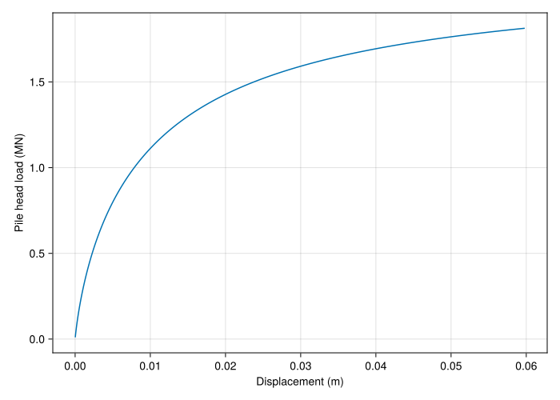
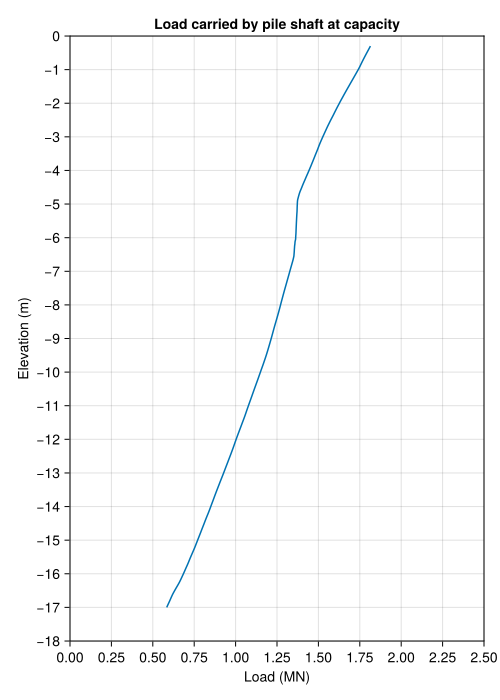

Tutorial
Pkg> add "https://github.com/antonyorton/PileResponse.jl"import PileResponse as prspush!(LOAD_PATH, "../../src/") # Line not needed if package is added as above
using PrettyTables
using CairoMakie
CairoMakie.activate!(type="svg");- Tutorial
CPT data
We read CPT data from a text file such as a .csv file. It is a requirement that the file has columns for:
- depth (m)
- qc (MPa)
- fs (kPa)
- u2 (kPa)
The column names should be sensible or the program will not be able to guess them. We also need to ensure the correct relative path to the file and the correct delimeter, for example comma (',') or tab ('\t').
data = prs.read_delimited_text_file("../../data/example_cpt_data.csv", delim=',');We extract the column names and assign the data to variables.
depth_col, qc_col, fs_col, u2_col = prs.find_cpt_column_names(collect(keys(data)));
depth_m = data[depth_col];
qc_MPa = data[qc_col];
fs_MPa = data[fs_col] * 0.001;
u2_MPa = data[u2_col] * 0.001;Plot the CPT data
Check that the data looks as expected by comparing to pdf reports if available.
fig1 = Figure(size=(800, 800));
ax1 = Axis(fig1[1, 1], title="qc (MPa)", xlabel="qc (MPa)", ylabel="Elevation (m)", yticks=(-round(depth_m[end] + 1):0));
ax2 = Axis(fig1[1, 2], title="fs (kPa)", xlabel="fs (kPa)", yticks=(-round(depth_m[end] + 1):0));
ax3 = Axis(fig1[1, 3], title="u2 (kPa)", xlabel="u2 (kPa)", yticks=(-round(depth_m[end] + 1):0));
lines!(fig1[1, 1], qc_MPa, -depth_m);
lines!(fig1[1, 2], 1000 * fs_MPa, -depth_m);
lines!(fig1[1, 3], 1000 * u2_MPa, -depth_m);Note that the code for creating plots will be hidden from now on. For help with plotting using CairoMakie, refer to the docs at https://docs.makie.org/stable/.
fig1Soil properties and depth to groundwater
Assign properties which are assumed to be constant over the soil profile. The loss in accuracy from assuming a constant soil unit weight is likely to be acceptable for most situations.
Soil properties
gamma_soil = 20.5; #Soil unit weight (kN/m3)
Poisson_ratio = 0.3;Groundwater depth
gw_depth = 3.0; # m below groundDerive $I_{c}$, $V_{s}$ and $E_{0}$
From the correlations published by Roberston and Cabal (2022) and the theory of elasticity, we derive:
The soil behaviour type
- $\small{I_{c} = \sqrt{(3.47 - log_{10}(Q_{t}))^{2} + (log_{10}(F_{r}) + 1.22)^{2}}}$
The shear wave velocity
- $\small{V_{s} = \sqrt{(\alpha_{vs}\cdot \large\frac{q_{n}}{\small{0.101}})}}$, where $\alpha_{vs} = 10^{(0.55 Ic + 1.68)}$
The small strain shear modulus
- $\small{G_{0} = \frac{\gamma}{9.81} \cdot V_{s}^2}$
The small strain elastic modulus
- $\small{E_{0} = 2(1 + ν)G_{0}}$
Ic = prs.get_Ic(depth_m, qc_MPa, fs_MPa, u2_MPa, gw_depth, gamma=gamma_soil, a=0.73);
Vs = prs.get_Vs(depth_m, qc_MPa, fs_MPa, u2_MPa, gw_depth, gamma=gamma_soil, a=0.73);
E0 = prs.get_E0(Vs, gamma=gamma_soil, ν=Poisson_ratio);Linear approximation to $E_{0}$ with depth
To assess the intial pile head stiffness, we need to model the soil profile as having a linearly increasing elastic modulus with depth. This is a reasonable approximation for many soil profiles.
We obtain a least squares fit to $E_{0}$
fun_E0_linear = prs.get_least_squares_interpolator(depth_m, E0);Plot the derived values from the CPT data
Pile load test details
For this tutorial, we consider a pile load test which was carried out at Mobile, Alabama. The test comprised a 457 mm diameter, 9.5 mm wall, closed-toe, steel-pipe pile driven to 17.0 m below ground and grouted after driving. The pile stick up was approximately 0.9 m above ground.
Further details of the test can be found at the website of the test organiser www.fellenius.net.
Pile properties
The available pile types are listed below
prs.list_available_pile_types()15-element Vector{Any}:
"Bored pile - dry bored pile"
"Bored pile - no support"
"Bored pile - permanent casing"
"Bored pile - recoverable casing"
"Bored pile - with slurry"
"Bored pile - with slurry and grooved sockets"
"CFA pile"
"Driven pile - cast in place"
"Driven pile - concrete coated steel"
"Driven pile - pre-cast concrete"
"Driven pile - steel H pile"
"Driven pile - steel closed ended"
"Driven pile - steel open ended"
"Screw pile - cast in place"
"Screw pile - with casing"We assign pile type, pile length and pile diameter
pile_type = "Driven pile - steel closed ended";
pile_length = 17.0; # metres
pile_diameter = 0.457; # metresThe pile elastic modulus, $E_{pile}$, is caculated for a steel shell, grout filled circular pile
odiam = 0.457;
idiam = 0.457 - 0.0095;
Aouter = pi * odiam^2 / 4;
Ainner = pi * idiam^2 / 4;
Eouter = 200 # GPa;
Einner = 20 # GPa;
Epile_GPa = ((Aouter - Ainner) * Eouter + Ainner * Einner) / Aouter;Epile_MPa = round(Int64, 1000 * Epile_GPa);Epile = 27406 MPaPile ultimate load assessment
We calculate the pile ultimate load following the approach of Frank (2017).
The calculation of pile ultimate resistance relies on several factors which require a soil type. Using the assessed $I_{c}$ value, the soil types required for the assessment are defined in this notebook as follows:
- $I_{c} > 2.60$ : Silt and clay (soil type 1).
- $2.05 < I_{c} \leq 2.60$ : Intermediate soil (soil type 2).
- $I_{c} \leq 2.05$ : Sand (soil type 3).
soil_type_CPT2012 = prs.get_soil_type_CPT2012(Ic);Pile ultimate shaft load
The ultimate shaft resistance for each node along the pile shaft is obtained as follows:
- $f_{s} = \alpha\cdot f_{sol}$, with $f_{sol} \leq f_{smax}$
where:
- $f_{sol}$ is the unfactored shaft resistance dependent on $q_{c}$ and soil type.
- $\alpha$ is a factor dependent on soil type and pile type.
- $f_{smax}$ is a the limiting shaft resistance dependent on soil type and pile type.
$\alpha$ is shown below for [silt and clay, intermediate soils, sands].
prs.get_alpha_shaft_CPT2012()[pile_type]3-element Vector{Float64}:
0.4
0.5
0.85$f_{sol}$ is shown below for sands and clays. Note that for intermediate soils the function get_ultimate_shaft_resistance() linearly interpolates $f_{sol}$ between $I_{c} = 2.05$ (sands) and $I_{c} = 2.60$ (clays).

We first calculate the ultimate resistance (MPa) for each node along the pile.
fshaft_MPa = prs.get_ultimate_shaft_resistance(qc_MPa, Ic, pile_type, factor=1.0);Then the ultimate shaft load (MN) for the whole pile.
ult_shaft_MN = prs.get_ultimate_shaft_load(depth_m, fshaft_MPa, pile_diameter, pile_length);The ultimate shaft load is 1.444 (MN)Pile ultimate base load
The ultimate base load is obtained as follows:
We obtain the ultimate base resistance (MPa):
- $f_{b} = k_{c}\cdot q_{ca}$
where:
- $k_{c}$ is a factor dependent on soil type and pile class.
- $q_{ca}$ is the equavalent average cone resistance for the soil within 1.5 diameters above and below the pile base.
qc_avg_base = prs.get_average_qc_at_pile_base(depth_m, qc_MPa, pile_length, pile_diameter, clip_to_30pct=true);kc_at_base = prs.get_kc_base_CPT2012()[pile_type][soil_type_CPT2012[argmin(abs.(depth_m .- pile_length))]][1];Then caculate the ultimate base load (MN).
fb_MPa = kc_at_base * qc_avg_base;
ult_base_MN = pi * pile_diameter^2 / 4 * fb_MPa;qc_avg_base = 10.61 MPa
kc_at_base = 0.4
Ultimate base load = 0.696 MNPile ultimate load
The pile ultimate load is the sum of the ultimate loads for the shaft and the base.
pile_ult_load = ult_base_MN + ult_shaft_MNThe predicted pile ultimate load is 2.14(MPa)Pile load displacement response
The pile load displacement response is assessed by first calculating an intitial pile head stiffness based on the theory of elasticity. The reduction in pile head stiffness for increasing load is then obtained by scaling down dependent on the ratio of applied load to ultimate load.
The small strain elastic modulus, $E_{0}$, along the pile shaft is assumed to vary linearly, and the least squares approximation obtained above gives:
E_L = fun_E0_linear(pile_length)
E_Lon2 = fun_E0_linear(pile_length / 2)E₀ at the base of the shaft = 277 MPa
E₀ at the midpoint of the shaft = 202 MPaThe initial pile head stiffness, $k_{0}$, taking account of pile compressibility, is computed following the closed form elastic solution by Randolph and Wroth (1978) as:
k0 = prs.get_initial_pile_head_stiffness(pile_length, pile_diameter, Epile_MPa, E_L, E_Lon2, ν=Poisson_ratio)k₀ = 623 MN/mThe load displacement curve is derived following a method proposed by Mayne (2001), based on work by Fahey and Carter (1993), which assumes that the pile head stiffness varies as a function of the load ratio $P/P_{ult}$ as:
- $k = k_{0} \cdot (1 - (P/P_{ult})^{0.3})$
We specify the pile head loads
pile_head_loads = 0.01:0.001:0.90*pile_ult_load;Then calculate the cumulative displacement at each load
displacement = prs.get_pile_head_displacement(k0, pile_head_loads, pile_ult_load);Pile capacity
The pile capacity is calculated as the load at which the allowable pile head settlement is reached.
Specify the allowable pile head settlement (metres)
allowable_pile_head_settlement_m = 0.06;Then calculate the pile capacity
pile_capacity_MN = pile_head_loads[argmin(abs.(displacement .- allowable_pile_head_settlement_m))];The pile capacity is 1.814 MN
The displacement at capacity is 0.06 mLoad displacement curve
Table of results
# Prepare data
num_rows = 10
mylen = sum.([pile_head_loads .< pile_capacity_MN])[1]
table_indices = collect(1:round(Int64, mylen / (num_rows)):mylen)
table_indices[end] = mylen
table_data = stack([item[table_indices] for item in [pile_head_loads, displacement]])
# Show table
pretty_table(
HTML,
table_data,
header=["Load (MN)", "Displacement (m)"],
max_num_of_rows=num_rows,
formatters=ft_printf("%6.4f"))| Load (MN) | Displacement (m) |
|---|---|
| 0.0100 | 0.0000 |
| 0.1900 | 0.0006 |
| 0.3700 | 0.0014 |
| 0.5500 | 0.0026 |
| 0.7300 | 0.0042 |
| 0.9100 | 0.0065 |
| 1.0900 | 0.0095 |
| 1.2700 | 0.0141 |
| 1.4500 | 0.0211 |
| 1.6300 | 0.0333 |
| 1.8130 | 0.0598 |
Load carried by pile shaft at capacity
We can now view the load carried by the pile with depth.
We set the applied load as the pile capacity
applied_load = pile_capacity_MN;Then calculate the load versus depth
mydepth, myload = prs.get_load_vs_depth(depth_m, qc_MPa, Ic, applied_load, pile_ult_load, pile_length, pile_diameter, pile_type);Load versus depth at pile capacity
Concluding remarks
Thank you for following this tutorial.
If you would like to calculate the pile ultimate load or the load-displacement response with a single function, please see the module FastSolve.jl in the GitHub repository.
This tutorial was completed in Sydney, Australia on 23 February 2025.
This page was generated using Literate.jl.